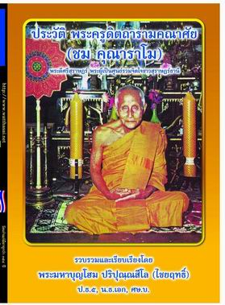

|
�
� ได้มีครู
อาจารย์ นักเรียนและประชาชนทั่วไป มาถามถึงหนังสือประวัติของ
พระครูดิตถามรามคณาศัย (หลวงพ่อชม) อยู่เนือง ๆ ซึ่งพระมหาบุญโฮม
ปริปุณฺณสีโล ได้จัดพิมพ์แจกไปแล้ว ๔ ครั้ง ด้วยทุนทรัพย์ส่วนตัว
แต่ก็ยังไม่เพียงพอ ต่อความต้องการของศรัทธาสาธุชน และมีความประสงค์จะพิมพ์ใหม่หลายครั้ง
แต่ก็ไม่สามารถจัดพิมพ์ได้ เพราะไม่มีงบประมาณดำเนินการ
จึงได้เผยแพร่ในเว็บไซต์วัดท่าไทร
��
เมื่อวันที่
๑๓ เมษายน ๒๕๕๔ น.ส.กัลยา เสือทอง (ยา),นางชนธิชา
ชิณรา และ นางสุจินดา เพ็งศรี ต.บางกุ้ง อ.เมืองฯ
จ.สุราษฎร์ธานี ได้รับเป็นเจ้าภาพจัดพิมพ์ เพื่อเป็นที่ระลึกในงานปิดทองสรงน้ำหลวงพ่อชม
ประจำปี ๒๕๕๔ (และได้แจกในวันเปิดงาน เมื่อวันที่ ๒๕ เมษายน
๒๕๕๔ ที่ผ่านมาแล้ว) จึงขออนุโมทนาในกุศลเจตนาของเจ้าภาพไว้
ณ ที่นี้
��
สำหรับท่านมีจิตศรัทธา
ประสงค์จะเป็นเจ้าภาพในการจัดพิมพ์ เพื่อเผยแพร่เป็นบุญกุศล
ขอเชิญติดต่อได้ที่ พระมหาบุญโฮม ปริปุณฺณสีโล ผู้ช่วยเจ้าอาวาสวัดท่าไทร
ขณะเดียวกัน ท่านที่มีจิตศรัทธาประสงค์จะสนับสนุน งานเผยแพร่ธรรมะของคณะสงฆ์ส่วนนี้
สามารถโอนเงินเข้า ธนาคารกรุงไทย สาขาสุราษฎร์ธานี บัญชีออมทรัพย์
เลขที่ ๘๐๗-๐-๑๐๒๑๔-๔ ชือบัญชี พระมหาบุญโฮม ปริปุณณสีโล
ก็จะเป็นบุญกุศลและเป็นที่น่าอนุโมทนาอย่างยิ่ง
|